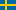
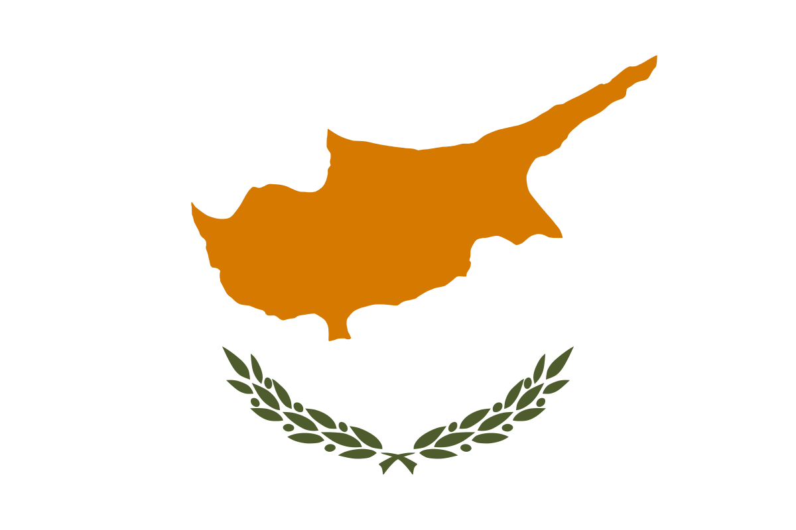
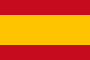

Automatic translation. Printed names stay as printed. A translation can change a sentence, so the English page is the record.
Leaders.vote
Pick an election.
Leaders.vote is an independent, nonpartisan voter guide. It is not a campaign, not an endorsement, and not a government site. Each country below is one election, copied from that country's official file. A place on a map is colored only from reported vote totals. A place with no total stays blank. When that office corrects the file, this page is rebuilt from the new file.
 United StatesCountrywide election on 3 November 2026. Open a state, then see its counties. A state is colored only where reported votes have one party ahead.
United StatesCountrywide election on 3 November 2026. Open a state, then see its counties. A state is colored only where reported votes have one party ahead.
 South AfricaLocal councils on 4 November 2026. A municipality stays blank until the Commission reports votes there.
South AfricaLocal councils on 4 November 2026. A municipality stays blank until the Commission reports votes there.
 BrazilPresidential runoff on 25 October 2026. The court's file marks the count finished. A state is colored from the votes reported there.
SwitzerlandTwo yes-or-no questions on 27 September 2026. The official file still marks the count provisional. The map is the neutrality question, by canton.
BrazilPresidential runoff on 25 October 2026. The court's file marks the count finished. A state is colored from the votes reported there.
SwitzerlandTwo yes-or-no questions on 27 September 2026. The official file still marks the count provisional. The map is the neutrality question, by canton.
 SlovakiaRegional chairs on 24 October 2026. The Statistical Office file is a finished count. The map is the chair. The council vote is in a table.
SlovakiaRegional chairs on 24 October 2026. The Statistical Office file is a finished count. The map is the chair. The council vote is in a table.

SwedenParliament on 13 September 2026. The Election Authority marks the count final. A county adds the official constituency votes inside it.
CyprusParliamentary election, 2026. The open-data file is the published count. A district is an area that elects members of the House. GermanyParliament on 23 February 2025. The official file marks the count final. The map is the second vote, by state. AustraliaHouse of Representatives on 3 May 2025. The official file marks the count final. The map is first-preference votes, by state. JapanHouse of Representatives on 27 October 2024. The ministry file is the published count. The map is the constituency vote, by prefecture.
PolandSejm on 15 October 2023. The Commission's file is the published count. The map is list votes, by voivodeship.
CzechiaChamber of Deputies on 8 and 9 October 2021. The Statistical Office file is the published count. The map is list votes, by region.
JapanHouse of Representatives on 27 October 2024. The ministry file is the published count. The map is the constituency vote, by prefecture.
PolandSejm on 15 October 2023. The Commission's file is the published count. The map is list votes, by voivodeship.
CzechiaChamber of Deputies on 8 and 9 October 2021. The Statistical Office file is the published count. The map is list votes, by region.

SpainCongress on 23 July 2023. The ministry file is the published count. The map adds each province's votes into its autonomous community. FranceNational Assembly, first round, on 30 June 2024. The ministry file is the final first-round count. The map is metropolitan regions.
ItalyChamber of Deputies on 25 September 2022. The Chamber file is the published count. The map is five areas, from each list's circoscrizione figure. Valle d'Aosta is not in the file.
CanadaHouse of Commons on 28 April 2025. Elections Canada's table is the official count. The map is valid votes, by province and territory.
FranceNational Assembly, first round, on 30 June 2024. The ministry file is the final first-round count. The map is metropolitan regions.
ItalyChamber of Deputies on 25 September 2022. The Chamber file is the published count. The map is five areas, from each list's circoscrizione figure. Valle d'Aosta is not in the file.
CanadaHouse of Commons on 28 April 2025. Elections Canada's table is the official count. The map is valid votes, by province and territory.